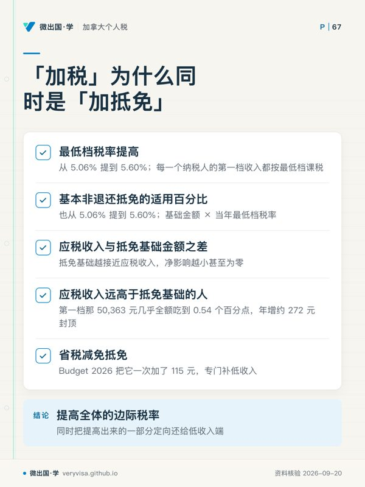
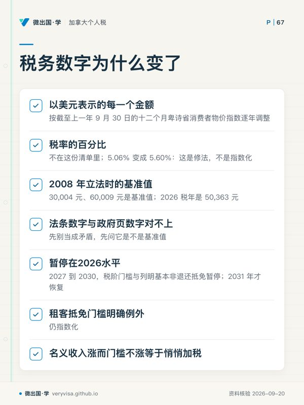
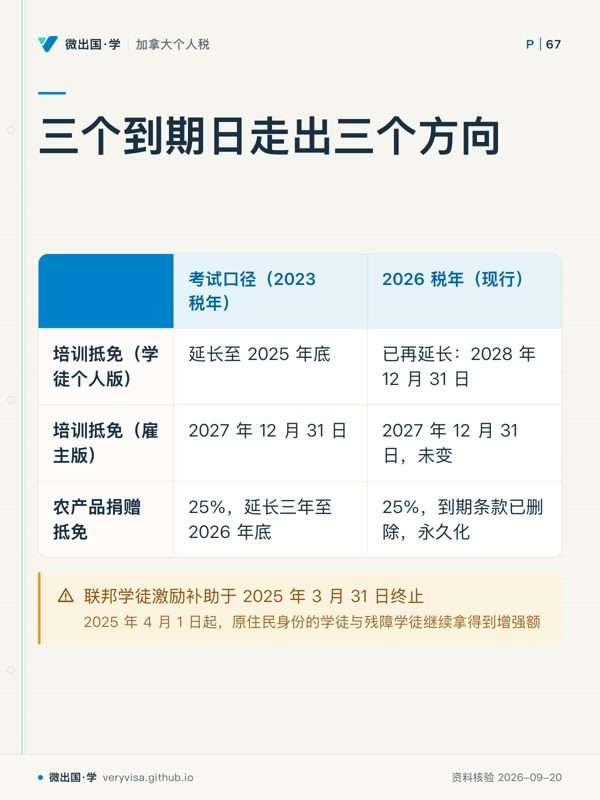

核实日期：2026-09-05｜现行口径：2026 税年（2027 年春申报）｜复核：2027-01-31（本页几乎每个数字都逐年指数化） 法条依据指向《不列颠哥伦比亚省所得税法》(Income Tax Act, RSBC 1996, c. 215) 现行合订本（Act current to 2026-09-01）；数值指向 B.C. 省政府现行页面与加拿大税务局 (Canada Revenue Agency, CRA) 的官方表格。
在卑诗省报税的人，交的从来不是一份税，而是两份：联邦那一份，和省里那一份。它们共用同一张报表、同一个应税收入、同一次评税，却由两套完全独立的规则算出金额。这一页写给三种人：想把自己那一栏省税和省级抵免报满的普通纳税人、要在实务里替客户填这两张表的学员、以及想搞清楚 2026 年 2 月那次「把最低档税率从 5.06% 提到 5.60%」到底涨了谁的税的读者。读完你应该能做到三件事：拿着一个应税收入数字算出 2026 税年的 BC 税；分清一项省级抵免落在 BC428 还是 BC479，以及这个区别值多少钱；说出手上考试口径里哪些省级数字仍然准确、哪些整节已经作废。
一、制度设计与底层逻辑：省能改什么，不能改什么
1.1 省税寄生在联邦税基上，这是全部设计的起点
卑诗省与联邦之间有一份征税协议 (Tax Collection Agreement)：省不自设税务局，报表由 CRA 一并受理，省税与联邦税出现在同一张评税通知书 (notice of assessment, NOA) 上，退税也是同一张支票。代价是省必须接受联邦定义的应税收入 (taxable income)——报表第 26000 行那个数——作为自己的税基。
由此产生一条贯穿全页的分界线：省能动的是「税基之后」的一切，动不了「税基之前」的任何一件事。
省能动的三样：税率与税阶；非退还抵免的种类与额度；可退还抵免与福利。省动不了的：什么算收入、哪些支出能扣、资本利得的纳入率、注册账户的额度、CPP 与 EI 的费率。所以当有人问「BC 的资本利得税率是多少」，问题本身就问错了——纳入率是联邦的（2026 税年仍是二分之一），BC 只是把纳入后的那一半按自己的税阶再课一遍。魁北克是唯一的例外，它自设税务局、自设税基，另有一整套申报；卑诗省不是。
1.2 两张表，两种法律后果

省级的钱分两处落地，分错地方就是分错钱：
BC428《不列颠哥伦比亚省税》(Form BC428, British Columbia Tax) 装的是非退还抵免 (non-refundable tax credits)。它们只能把省税压到零，压不出退款。一个收入低到本来就不交省税的人，把基本个人金额、老年额、残障额全部填满，得到的仍然是零。
BC479《不列颠哥伦比亚省抵免》(Form BC479, British Columbia Credits) 装的是可退还抵免 (refundable tax credits)。表头写得很直白：这些抵免即使你一分税都不欠也照拿，超过应缴税额的部分以退款形式付给你（CRA）。租客抵免、销售税抵免、长者与残障人士家居翻新抵免、培训抵免都在这张表上。
✕
「反正我不交税，省级抵免跟我没关系」——这句话每年让低收入家庭白丢几百元
非退还的那半边确实跟你没关系，可退还的那半边恰恰是专门发给你的。2026 税年一个符合条件的租客可以拿到最高 400 元现金，一个做过合资格无障碍改造的长者可以拿到最高 1,000 元现金，两项都不要求你先欠税。不报表就一分拿不到，因为它们的唯一发放渠道就是 T1 报表。
1.3 谁与谁在博弈：一次「加税」为什么同时是一次「加抵免」
Budget 2026 把最低档税率从 5.06% 提到 5.60%（BC 省政府）。表面看是普涨——因为累进税制下每一个纳税人的第一档收入都按最低档课税，这一刀砍在所有人身上，不只砍低收入者。
但省政府在同一份预算里做了第二个动作：把基本非退还抵免的适用百分比也从 5.06% 提到 5.60%。这不是巧合，是制度设计本身的连带效果——卑诗省的基本抵免一律定义为「基础金额 × 当年最低档税率」（BC 省政府），税率一动，全套抵免的现金价值自动同比例上浮。
于是一个人的净损益取决于一个很朴素的比较：他的应税收入与他的抵免基础金额之差。抵免基础越接近应税收入（低收入、多受养人、有残障额），涨税率的净影响越小甚至为零；应税收入远高于抵免基础的人，第一档那 50,363 元几乎全额吃到 0.54 个百分点的加征，年增约 272 元封顶。这是一次刻意做成累退—累进折中的加税：绝对金额上限固定，越低收入的人越被抵免那一侧对冲掉。
再往上叠一层，还有一项专门补低收入的B.C. tax reduction credit（省税减免抵免），Budget 2026 把它从 690 元之前的水平一次加了 115 元（第二节详表）。三个动作合起来读，才看得懂这次预算的方向：提高全体的边际税率，同时把提高出来的一部分定向还给低收入端。
1.4 报错的法律后果
省税与联邦税同评同罚。少报省税的补税与利息按 CRA 的规定利率计收，与联邦欠税同一套规则；复评时效也共用一套——一般个人的正常复评期是评税通知书发出之日起三年，之后要动就得靠纳税人自己申请或者落进「疏忽、重大过失、虚假陈述」的例外。
方向反过来的错报更常见，也更冤：该拿的可退还抵免没拿。这不是罚款问题，是钱没到手的问题，而且它有自己的一套时限——销售税抵免只能在税年结束后三年内主张（BC 省政府），农产品捐赠抵免须在捐赠后五个税年内主张（BC 省政府），普通的报表调整请求 (T1-ADJ) 一般可回溯十个历年。三个不同的时限，谁也不提醒你，所以下面第七节的自查清单要按年过一遍。
二、2026 税年现行规则与数字
2.1 税阶：七档，最低档改了百分比
| 项目 | 2024税年（官方历史） | 2025 税年 | 2026 税年（现行） | 状态 |
|---|---|---|---|---|
| 第一档 | 5.06%（2024 税年；已生效；官方公布值），至47,937 加元（2024 税年；已生效；官方公布值） | 5.06%（2025 税年；已生效；官方公布值），至49,279 加元（2025 税年；已生效；官方公布值） | 5.6%（2026 税年；已生效；官方公布值），至50,363 加元（2026 税年；已生效；官方公布值） | 已生效（BC 省政府、CRA） |
| 第二档 | 7.7%（2024 税年；已生效；官方公布值），至95,875 加元（2024 税年；已生效；官方公布值） | 7.7%（2025 税年；已生效；官方公布值），至98,560 加元（2025 税年；已生效；官方公布值） | 7.7%（2026 税年；已生效；官方公布值），至100,728 加元（2026 税年；已生效；官方公布值） | 已生效（税率未动） |
| 第三档 | 10.5%（2024 税年；已生效；官方公布值），至110,076 加元（2024 税年；已生效；官方公布值） | 10.5%（2025 税年；已生效；官方公布值），至113,158 加元（2025 税年；已生效；官方公布值） | 10.5%（2026 税年；已生效；官方公布值），至115,648 加元（2026 税年；已生效；官方公布值） | 已生效 |
| 第四档 | 12.29%（2024 税年；已生效；官方公布值），至133,664 加元（2024 税年；已生效；官方公布值） | 12.29%（2025 税年；已生效；官方公布值），至137,407 加元（2025 税年；已生效；官方公布值） | 12.29%（2026 税年；已生效；官方公布值），至140,430 加元（2026 税年；已生效；官方公布值） | 已生效 |
| 第五档 | 14.7%（2024 税年；已生效；官方公布值），至181,232 加元（2024 税年；已生效；官方公布值） | 14.7%（2025 税年；已生效；官方公布值），至186,306 加元（2025 税年；已生效；官方公布值） | 14.7%（2026 税年；已生效；官方公布值），至190,405 加元（2026 税年；已生效；官方公布值） | 已生效 |
| 第六档 | 16.8%（2024 税年；已生效；官方公布值），至252,752 加元（2024 税年；已生效；官方公布值） | 16.8%（2025 税年；已生效；官方公布值），至259,829 加元（2025 税年；已生效；官方公布值） | 16.8%（2026 税年；已生效；官方公布值），至265,545 加元（2026 税年；已生效；官方公布值） | 已生效 |
| 第七档 | 20.5%（2024 税年；已生效；官方公布值），超过252,752 加元（2024 税年；已生效；官方公布值） | 20.5%（2025 税年；已生效；官方公布值），超过259,829 加元（2025 税年；已生效；官方公布值） | 20.5%（2026 税年；已生效；官方公布值），超过265,545 加元（2026 税年；已生效；官方公布值） | 已生效 |
| 门槛指数化因子 | 5.0%（2024） | 2.8% | 2.2%，且 2027–2030 暂停 | 已生效；BCITA4.52(4.25)冻结已入法，租客抵免门槛例外（Queen's Printer, Government …） |
上表2024列为官方历史；省增补册结构依据2023税年，不能将它改标2024。相应三年历史另列本模块报告，不能用“只是指数化”省掉历史数核验。
2026 税年的合并最高边际税率因此是联邦 33% 加省级 20.5%，合计 53.5%——这个数在讲资本利得、股息、奖金规划的页面里会反复用到。
2.2 5.06% 变成 5.60%：这是修法，不是指数化
这一条是本页最容易被误解的地方，也是判断「一个税务数字为什么变了」的通用方法。
卑诗省所得税法第 4.52 条规定了指数化机制：「相关条款里以美元表示的每一个金额」按截至上一年 9 月 30 日的十二个月卑诗省消费者物价指数逐年调整（Queen's Printer, Government …）。请注意它调整的对象——以美元表示的金额，也就是税阶门槛、基本个人金额、老年额那一类。税率的百分比本身不在这份清单里，第 4.52 条从来没有授权任何人去调整它。
所以百分比要变，只有一条路：修法。Budget 2026 的《2026 年预算措施实施法案》直接改写了第 4.1(1)(a) 条里的那个常量，现行合订本的第一档已经印着 5.6%（Queen's Printer, Government …）。
⚠️
法条上写着 30,004 元，政府页上写着 50,363 元，哪个是真的？
两个都是真的，它们是同一个数的两种形态。卑诗省所得税法第 4.1(1) 条里的 30,004 元、60,009 元是 2008 年立法时的基准值，条文写死之后就再没动过；每年真正适用的门槛，是把这些基准值套进第 4.52 条的指数化公式、逐年累乘出来的结果，2026 税年是 50,363 元（BC 省政府）。看到法条数字与政府页数字对不上，先别当成矛盾，先问它是不是基准值。 这是加拿大税法里极常见的一种写法，联邦《所得税法》的很多金额同样如此。
ℹ️
2.3 基本非退还抵免：金额与适用率同时变了
| 项目 | 2024税年（官方历史） | 2025 税年 | 2026 税年（现行） | 状态 |
|---|---|---|---|---|
| 适用百分比 | 5.06%（2024 税年；已生效；官方公布值） | 5.06%（2025 税年；已生效；官方公布值） | 5.6%（2026 税年；已生效；官方公布值） | 已生效（BC 省政府） |
| 基本个人金额 (BPA) | 12,580 加元（2024 税年；已生效；官方公布值） | 12,932 加元（2025 税年；已生效；官方公布值） | 13,216 加元（2026 税年；已生效；官方公布值） | 已生效（BC 省政府） |
| 配偶或同居伴侣额 | 10,772 加元（2024 税年；已生效；官方公布值）；收入超1,078 加元（2024 税年；已生效；官方公布值）递减 | 11,073 加元（2025 税年；已生效；官方公布值）；收入超1,108 加元（2025 税年；已生效；官方公布值）递减 | 11,317 加元（2026 税年；已生效；官方公布值）；收入超1,132 加元（2026 税年；已生效；官方公布值）递减 | 已生效（BC 省政府） |
| 合资格受养人额 | 10,772 加元（2024 税年；已生效；官方公布值） | 11,073 加元（2025 税年；已生效；官方公布值） | 11,317 加元（2026 税年；已生效；官方公布值） | 已生效 |
| 老年额（年满 65） | 5,641 加元（2024 税年；已生效；官方公布值）；收入超41,993 加元（2024 税年；已生效；官方公布值）递减 | 5,799 加元（2025 税年；已生效；官方公布值）；收入超43,169 加元（2025 税年；已生效；官方公布值）递减 | 5,927 加元（2026 税年；已生效；官方公布值）；收入超44,119 加元（2026 税年；已生效；官方公布值）递减 | 已生效 |
| 省级照护者额 | 5,505 加元（2024 税年；已生效；官方公布值） | 5,659 加元（2025 税年；已生效；官方公布值） | 5,784 加元（2026 税年；已生效；官方公布值） | 已生效 |
| 残障额（本人） | 9,435 加元（2024 税年；已生效；官方公布值） | 9,699 加元（2025 税年；已生效；官方公布值） | 9,913 加元（2026 税年；已生效；官方公布值） | 已生效 |
| 未满 18 岁残障补充额 | 5,505 加元（2024 税年；已生效；官方公布值） | 5,659 加元（2025 税年；已生效；官方公布值） | 5,783 加元（2026 税年；已生效；官方公布值） | 已生效 |
| 退休金额 | 1,000 加元（2024 税年；已生效；官方公布值） | 1,000 加元（2025 税年；已生效；官方公布值） | 1,000 加元（2026 税年；已生效；官方公布值） | 长青，不指数化 |
| 志愿消防员与搜救志愿者额 | 3,000 加元（2024 税年；已生效；官方公布值） | 3,000 加元（2025 税年；已生效；官方公布值） | 6,000 加元（2026 税年；已生效；官方公布值） | 已生效，一次翻倍（BC 省政府） |
| 医疗费用的净收入地板 | 净收入3%与2,616 加元（2024 税年；已生效；官方公布值）取小 | 净收入3%与2,689 加元（2025 税年；已生效；官方公布值）取小 | 净收入3%与2,748 加元（2026 税年；已生效；官方公布值）取小 | 已生效 |
配偶额与合资格受养人额的写法在这几年里换过一次形态：考试口径写的是「基础金额 11,285 元减去对方净收入，最高 10,259 元」；现行页改写成「额度 11,317 元，对方净收入超过 1,132 元起递减」。计算顺序相同，但各年参数不同：2026按 min(11317, max(0,12449−对方净收入))，也就是11317减去净收入超1132的部分；不能用11317−10185来解释历史基础额。看到形态变了先做一次数值验算，别急着当成规则变了。
2.4 B.C. tax reduction credit：低收入端的定向减免
| 参数 | 2024税年（官方历史） | 2025 税年 | 2026 税年（现行） | 状态 |
|---|---|---|---|---|
| 基本减免额 | 547 加元（2024 税年；已生效；官方公布值） | 562 加元（2025 税年；已生效；官方公布值） | 690 加元（2026 税年；已生效；官方公布值） | 已生效（Budget 2026 加 115 元，BC 省政府） |
| 开始递减的净收入 | 24,338 加元（2024 税年；已生效；官方公布值） | 25,020 加元（2025 税年；已生效；官方公布值） | 25,570 加元（2026 税年；已生效；官方公布值） | 已生效（BC 省政府） |
| 递减率 | 3.56%（2024 税年；已生效；官方公布值） | 3.56%（2025 税年；已生效；官方公布值） | 3.56%（2026 税年；已生效；官方公布值） | 长青未变 |
| 归零的净收入 | 39,703 加元（2024 税年；已生效；官方公布值） | 40,807 加元（2025 税年；已生效；官方公布值） | 44,952 加元（2026 税年；已生效；官方公布值） | 已生效（CRA 官方表逐行印证 2025 值） |
它是非退还的，落在 BC428 第 79 行，只能把省税压到零。算法是一条直线：净收入不超过起点就拿满额，超过部分每一元扣 3.56 分，扣到零为止。
⚠️
2025 税年的基本减免额是 562 元，不是 575 元
575 元这个数在网上流传是有来源的——它是 2026 年按 2.2% 指数化之后、Budget 2026 再加 115 元之前的中间值（562 × 1.022 ≈ 575，575 + 115 = 690）。它是一个从未适用于任何一个税年的过程量。要填 2025 年的表，官方 BC428 表格第 73 行印的是 562 元（CRA）。凡是从「变化幅度」倒推出来的历史值，都要回原始表格核一次，因为倒推会把中间步骤当成终值。
2.5 省级最低税：一个不是独立参数的百分比
| 项目 | 2024税年（官方历史） | 2025 税年 | 2026 税年（现行） | 状态 |
|---|---|---|---|---|
| 省级最低税附加比例 | 33.7%（2024 税年；已生效；官方公布值） | 34.9%（2025 税年；已生效；官方公布值） | 40%（2026 税年；已生效；官方公布值） | 已生效（BC 省政府、CRA） |
| 省级最低税结转抵免比例 | 33.7%（2024 税年；已生效；官方公布值） | 34.9%（2025 税年；已生效；官方公布值） | 40%（2026 税年；已生效；官方公布值） | 同上 |
三年三个数，看起来像被改了两次，其实它一次都没有被单独修改过：这个比例依法按「当年卑诗省最低档税率 ÷ 当年联邦最低档税率」计算，并四舍五入到最接近的 0.001（正好居中向上）。2026-09-05 回核 BC ITA ss.4.68(1)–(2)、4.8(1)–(2) 已确认公式及取整，不是从两年表格巧合归纳出来的关系。2023 年是 5.06 ÷ 15 ＝ 33.7%；2025 年联邦最低档因 2025 年 7 月 1 日降税而成为全年混合的 14.5%，于是 5.06 ÷ 14.5 ＝ 34.9%；2026 年两头都变，5.6 ÷ 14 ＝ 40%。
这是本页最值得记住的一条方法：当一个百分比逐年变、变得毫无规律时，先假设它是两个别的数的比值。 记住比值，比背三个数安全得多——而且明年那个数你自己就能算出来。
2.6 租客抵免：金额长青，门槛年年右移
| 项目 | 考试口径（2023 税年） | 2024 税年 | 2025 税年 | 2026 税年（现行） | 状态 |
|---|---|---|---|---|---|
| 最高抵免额 | 400 元 | 400 加元（2024 税年；已生效；官方公布值） | 400 加元（2025 税年；已生效；官方公布值） | 400 加元（2026 税年；已生效；官方公布值） | 长青未变 |
| 满额门槛（调整后家庭净收入） | 60,000 元 | 63,000 加元（2024 税年；已生效；官方公布值） | 64,764 加元（2025 税年；已生效；官方公布值） | 66,189 加元（2026 税年；已生效；官方公布值） | 已生效（BC 省政府） |
| 归零点 | 80,000 元 | 83,000 加元（2024 税年；已生效；官方公布值） | 84,764 加元（2025 税年；已生效；官方公布值） | 86,189 加元（2026 税年；已生效；官方公布值） | 已生效 |
| 递减率 | 2% | 2%（2024 税年；已生效；官方公布值） | 2%（2025 税年；已生效；官方公布值） | 2%（2026 税年；已生效；官方公布值） | 长青未变 |
这一项 2023 税年才设立，是本页唯一一个「考试口径写的是它诞生那一年」的抵免。它可退还，填在 BC479 第 60575 与 60576 行；申报时要逐个填出租房地址、全年租金、租住月数与房东姓名（CRA）。
资格上有几条最常被漏掉的：全年须在卑诗省合资格出租单元住满六个「一个月期」，不足一个月的零头不计；12 月 31 日须是卑诗省居民并且年满 19 岁、或为人父母、或有同居配偶；付给非公平交易房东（配偶、双方父母、祖父母、兄弟姐妹、子女）的租金不算；营地、泊位、活动房屋地块的租金不算；配偶双方只能有一人申报，但合租室友各报各的（BC 省政府）。抵免金额只看收入不看租金——租金栏是核查用的，不进公式。
2.7 已经消失的那一项：气候行动税收抵免
| 项目 | 考试口径（2023 税年） | 2024–2025 给付年 | 2026 税年（现行） | 状态 |
|---|---|---|---|---|
| 成人最高年额 | 随碳税逐年上调 | 504 元 | 不存在 | 已撤销（BC 省政府） |
| 配偶或单亲首孩 | 同上 | 252 元 | 不存在 | 已撤销 |
| 其余每名子女 | 同上 | 126 元 | 不存在 | 已撤销 |
| 满额门槛 | 逐年上调 | 41,071 元（个人）／57,288 元（家庭） | 不存在 | 已撤销（BC 省政府） |
| 制度前景 | 考试口径写「随碳税每吨每年涨 15 元直到 2030」 | — | 项目已终止 | 考试口径的预测被政策逆转推翻 |
省级气候行动税收抵免 (climate action tax credit) 是与卑诗省碳税挂钩的季度返还，2025 年 4 月那一期是最后一期（BC 省政府）。联邦消费者碳税在 2025 年 4 月 1 日取消之后，卑诗、育空、西北地区、努纳武特四个自设碳税挂钩返还的法域，各自名称不同的返还项目都在 2025 年 4 月同时下线。
ℹ️
时点吻合是强证据，但官方并没有明说因果
四个法域的政府页都只写「已终止，末期 2025 年 4 月」，只有卑诗一页用了「抵消碳税影响」这样的挂钩语言。写作与讲课时应当说「时点吻合、政策背景一致」，而不是说「官方明确表示因为联邦碳税取消」——后者是我们推出来的，不是他们写下的。
已终止不等于历史权利消失：2023 及以前税年还没报税的人，补报后仍可拿到当年的抵免（BC 省政府）。这条对新移民和长期没报税的人是真金白银。
2.8 家庭福利：一次性加码被当成常态，是本页最贵的误读
| 项目 | 考试口径（2024-07 至 2025-06 给付期） | 2025-07 至 2026-06 | 2026-07 至 2027-06（现行） | 状态 |
|---|---|---|---|---|
| 首名子女最高年额 | 2,188 加元（2024-07-01 至 2025-06-30 福利期；依据 2023 税年收入；已生效；官方公布值）（含临时bonus） | 1,750 加元（2025-07-01 至 2026-06-30 福利期；依据 2024 税年收入；已生效；官方公布值） | 1,750 加元（2026-07-01 至 2027-06-30 福利期；依据 2025 税年收入；已生效；官方公布值） | 加码已结束（BC 省政府） |
| 第二名子女 | 1,375 加元（2024-07-01 至 2025-06-30 福利期；依据 2023 税年收入；已生效；官方公布值）（含临时bonus） | 1,100 加元（2025-07-01 至 2026-06-30 福利期；依据 2024 税年收入；已生效；官方公布值） | 1,100 加元（2026-07-01 至 2027-06-30 福利期；依据 2025 税年收入；已生效；官方公布值） | 同上 |
| 其后每名子女 | 1,125 加元（2024-07-01 至 2025-06-30 福利期；依据 2023 税年收入；已生效；官方公布值）（含临时bonus） | 900 加元（2025-07-01 至 2026-06-30 福利期；依据 2024 税年收入；已生效；官方公布值） | 900 加元（2026-07-01 至 2027-06-30 福利期；依据 2025 税年收入；已生效；官方公布值） | 同上 |
| 满额门槛 | 35,902 加元（2024-07-01 至 2025-06-30 福利期；依据 2023 税年收入；已生效；官方公布值）（含临时bonus） | 29,526 加元（2025-07-01 至 2026-06-30 福利期；依据 2024 税年收入；已生效；官方公布值） | 30,176 加元（2026-07-01 至 2027-06-30 福利期；依据 2025 税年收入；已生效；官方公布值） | 已生效（BC 省政府） |
| 第一段递减率 | 4% | 4% | 4% | 长青未变 |
| 第二段起点 | 114,887 加元（2024-07-01 至 2025-06-30 福利期；依据 2023 税年收入；已生效；官方公布值）（含临时bonus） | 94,483 加元（2025-07-01 至 2026-06-30 福利期；依据 2024 税年收入；已生效；官方公布值） | 96,562 加元（2026-07-01 至 2027-06-30 福利期；依据 2025 税年收入；已生效；官方公布值） | 已生效 |
| 单亲家庭补充额 | 500 加元（2024-07-01 至 2025-06-30 福利期；依据 2023 税年收入；已生效；官方公布值）（含临时bonus） | 500 加元（2025-07-01 至 2026-06-30 福利期；依据 2024 税年收入；已生效；官方公布值） | 500 加元（2026-07-01 至 2027-06-30 福利期；依据 2025 税年收入；已生效；官方公布值） | 长青未变 |
| 残障供项 | 无 | 无 | 2027 年 7 月起新增 | 已宣布（BC 省政府） |
考试口径定稿时正落在加码给付期之内，于是把含 bonus 的 2,188 元当作常态水平叙述。那笔加码是 2024 年省预算拨出的一次性支持，没有续期，2025 年 7 月起已回落。直接照抄考试口径数字，会系统性高估现行待遇约四分之一。
🔧
给付期与税年错开一年，这是家庭福利类问题的第一个坑
2026 年 7 月到 2027 年 6 月发的钱，看的是 2025 税年的调整后家庭净收入（BC 省政府）。所以「今年收入下降了，福利什么时候涨」的答案是：明年 7 月。同理，今年 4 月才把去年的报表补上的人，福利会从系统重算的那一期开始补发，而不是从报表提交日起算。这条规律对联邦儿童福利、消费税抵免同样成立——福利年从 7 月起算，税年从 1 月起算，两者永远差半年。
2.9 三项长青抵免：考试口径至今准确
| 项目 | 考试口径（2023 税年） | 2026 税年（现行） | 状态 |
|---|---|---|---|
| 长者与残障人士家居翻新抵免 | 合资格支出的 10%，支出上限 10,000 元，抵免上限 1,000 元 | 完全相同 | 长青未变，可退还（BC 省政府） |
| 政治捐款抵免 | 首 100 元的 75%、其后 450 元的 50%、再其后 600 元的 33⅓%，上限 500 元 | 完全相同 | 长青未变，非退还（BC 省政府） |
| 销售税抵免 | 本人 75 元＋配偶 75 元；单身超 15,000 元、有配偶超 18,000 元后按 2% 递减 | 完全相同 | 长青未变，可退还（BC 省政府） |
这三项是本页的对照组，价值不在它们本身，而在它们证明「省级抵免年年变」是个错误的直觉。翻新抵免自 2012 年（长者）与 2016 年（扩及残障人士）设立起，三个数一个都没动过；政治捐款抵免的分档公式同样如此，捐满 1,150 元就到顶，官方指引直接告诉你超过这个数就在表上填 500 元（CRA）；销售税抵免更彻底，它连指数化机制都没有，归零点因此固定在单身 18,750 元、有配偶 25,500 元。
判断一个省级数字要不要每年重查，看的不是它是不是钱，而是法条有没有把它写进指数化清单。 卑诗省所得税法第 4.52(1) 条逐条列出了受指数化约束的条款——基本个人金额、老年额、租客抵免等在内，翻新抵免与销售税抵免不在内（Queen's Printer, Government …）。这份清单本身就是一张「哪些数字会自己变」的检索表。
2.10 到期日型条款：三条不同的下场
| 项目 | 考试口径（2023 税年） | 2026 税年（现行） | 状态 |
|---|---|---|---|
| 培训抵免（学徒个人版） | 延长至 2025 年底 | 2028 年 12 月 31 日 | 已再延长（BC 省政府、CRA） |
| 培训抵免（雇主版） | 2027 年 12 月 31 日 | 2027 年 12 月 31 日 | 未变 |
| 农产品捐赠抵免 | 25%，延长三年至 2026 年底 | 25%，到期条款已删除，永久化 | 已生效（BC 省政府） |
同一本考试口径里的三个到期日，两年之内走出了三个方向：再延一次、原地不动、干脆永久化。到期日是省级税收优惠里最容易过期的一类信息，因为它天然带一个「必须有人主动去续」的动作，而续或不续每年都在重新决定。看到考试口径写「延长至某年底」，一律当作已过期处理，回官方页确认现行到期日。
培训抵免另有一条 2025 年 4 月 1 日起的变化：联邦学徒激励补助 (Apprenticeship Incentive Grant) 于 2025 年 3 月 31 日终止后，省里修改了规则，让原住民身份的学徒与残障学徒继续拿得到增强额（CRA）。这类「因为联邦项目消失而由省接住」的补丁，考试口径侧完全没有。
2.11 股息抵免与其他不变项
省级股息抵免率 2026 税年仍是合资格股息应税金额的 12%、非合资格股息应税金额的 1.96%（BC 省政府），与考试口径完全一致。分拆收入税 (tax on split income) 的省级顶格税率仍是 20.5%。省级境外税收抵免仍走 T2036 表。
三、实务流程：这两张表怎么填、什么时候填
顺序是硬的：BC428 必须在联邦报表的第一到第五步全部完成之后才能开始填，因为它的第 1 行直接抄联邦第 26000 行的应税收入（CRA）。省表算完，BC428 的结果落到报表第 42800 行；BC479 的结果落到报表第 47900 行。
谁要填 BC428：税年最后一日居住在卑诗省的人；以及非加拿大居民但当年仅在卑诗省有受雇收入、或仅在卑诗省有常设机构经营收入的人（CRA）。
BC428 的三部分（结构自 2023 税年至今未变，变的只有数字）：
第一部分算「按应税收入课的省税」。七档，按落在哪一档选对应的一栏，用「超出该档起点的部分 × 该档税率 ＋ 前面各档的累计税额」算，得数写在第 8 行或第 15 行。
第二部分算「非退还抵免总额」。基本个人金额、配偶或合资格受养人额、省级照护者额、CPP 与 EI 抵免、领养费用、志愿消防员额、退休金额、残障额、学费、学生贷款利息、由配偶或子女转来的额度、医疗费用、慈善捐赠与农产品捐赠——逐项加总后乘以当年的适用百分比（2026 税年是 5.60%）。慈善捐赠的算法特殊：首 200 元按最低档税率，超过 200 元的部分中对应于超过 265,545 元应税收入的那一段按 20.5%，其余按 16.8%（BC 省政府）。
ℹ️
卑诗省没有对应物的四项联邦抵免
加拿大受雇金额、首次购房者金额、家居无障碍支出、数字新闻订阅费用——这四项在联邦报表上有，在 BC428 上找不到对应行。填表时逐项对照会以为自己漏了行，其实是省里根本没设这项。反过来，农产品捐赠抵免与省级照护者额则是联邦没有、省里有的。
第三部分做调整并减掉各种专项抵免，顺序是法定的、不能自选：先加分拆收入税，再减非退还抵免总额、股息抵免、最低税结转抵免（2026 税年按联邦金额的 40% 计），再加最低税附加税（同样 40%），再减省级境外税收抵免、税收减免抵免、伐木税抵免、政治捐款抵免、员工持股与创投抵免（两者合计上限 2,000 元）、矿业勘探流通股抵免。顺序之所以要紧，是因为每一步都写着「若为负数则填零」——把一项挪到前面，可能让后面那项永远用不上。
BC479 上的可退还抵免（2025 表逐行，CRA）：销售税抵免（第 60330 与 60350 行）、长者与残障人士家居翻新（第 60480 行，另附 BC(S12) 附表）、创投抵免、矿业勘探抵免（另附 T88 表）、清洁建筑抵免（另附 T1356 表）、培训抵免个人版（第 60550 行，另附 T1014）与雇主版（第 60560 行）、造船与修船业抵免（第 60570 行）、租客抵免（第 60575 与 60576 行）。
凭证与核查：纸质申报时政治捐款的正式收据必须随表寄出；境外税收抵免须附 T2036。电子申报的凭证不必随表提交，但要留存——CRA 事后可能要求提供房东姓名或租金付款证明来支持租客抵免（BC 省政府），也可能要求提供翻新工程的发票。
截止日：一般个人 2027 年 4 月 30 日，自雇及其配偶 2027 年 6 月 15 日（欠税仍在 4 月 30 日到期）。福利类的时限更硬——本人与配偶都必须报表，CRA 才能重算下一个福利年的家庭福利与相关抵免（CRA）。
四、放到全国来看：卑诗省与其他法域的位置
十三个法域，两种制度。 除魁北克外的所有省与地区都把税基交给联邦、由 CRA 代征，各自只定税率、税阶与抵免；魁北克自设税务局、自设税基，居民要报两份完全独立的报表。所以「加拿大的省税」这句话严格说只对十二个法域成立。
同一时期其他法域的动向，与卑诗省这一轮放在一起读会更清楚：
阿尔伯塔省新增了一个 8% 的最低档，方向与卑诗省相反——一个在提最低档税率，一个在设更低的档。新斯科舍省的省级销售税部分从 10% 降到 9%，合并税率因此从 15% 降到 14%。萨斯喀彻温省与安大略省各自新增了生育治疗抵免。育空、西北地区、努纳武特与卑诗省一样，在 2025 年 4 月停掉了各自的碳税挂钩返还。
跨省搬家怎么判：省税归属只看税年最后一日（12 月 31 日）你住在哪个省，不按月份分摊，也不按收入来源地分。8 月从卡尔加里搬到温哥华、12 月 31 日住在温哥华的人，整个 2026 税年按卑诗省的税阶与抵免算，虽然前八个月一分钱都没在卑诗省赚。反过来，12 月 30 日搬去阿尔伯塔省的人，全年按阿尔伯塔省算。这条规则让年底搬家变成一个有金额的决定，而且它一年只有一个判定点，无从分摊。
投机与空置税只在这里说一句：它按物业评估值课征、按日历年计、次年 7 月缴，2026 年的税率是外国业主与未纳税全球收入者 3%、加拿大公民与永久居民 1%，2027 年将再涨到 4% 与 1%（BC 省政府）。它与所得税是两套完全独立的申报，指定区域内的业主每年 3 月 31 日前必须做声明，即使情况完全没变。细则见另一页 ca-provincial-02-bc-speculation-vacancy。
五、历史变革：三次「省级税负搬家」
第一次：医疗保费搬到雇主身上。 卑诗省曾是全国唯一按人头收取省级健康保险费的省份，医疗服务计划 (Medical Services Plan, MSP) 保费自 2020 年 1 月 1 日起全面取消（Government of British Columb…）。取消并不是免费的——省级筹资转向对雇主课征的健康税，负担从个人账单转移到了工资成本。两条余波至今存在：2020 年 1 月 1 日之前欠下的保费仍然要缴，取消不等于豁免；追溯性保费补助已于 2026 年 1 月 1 日停止受理，历史欠费不能再回头申请减免。考试口径里凡涉及 MSP 保费扣除或抵免的讨论，一律按历史内容读。
第二次：碳税连同它的返还一起消失。 联邦消费者碳税于 2025 年 4 月 1 日取消，卑诗省碳税随之废止，挂钩的省级气候行动税收抵免在同月发出最后一期。连锁反应还在往下走：与碳税挂钩的「北方与农村房主福利」200 元，官方明确其设立初衷是抵消碳税影响，既然碳税已经没有了，它将自 2027 税年起废止，常规最高补助将回到570元；这是2027适用的变化，2026仍按现行附表申领（bclaws.gov.bc.ca（1、2））。一条税消失时，跟着它一起被设计出来的补偿机制会陆续跟着消失，而且时间会拖上一两年——这正是考试口径类材料最容易过期的地带。
第三次：省级教育抵免退场。 卑诗省的教育金额抵免在 2019 年被取消，学费抵免保留。往年结转下来的未用教育额度仍然可以继续结转和使用（BC 省政府），所以这一条在很多年后还会出现在实务里：抵免本身没了，历史余额还在。
2026 年房主补助须按物业所在区域分流。《Home Owner Grant Act》s.2 与附表1/3给常规上限570元/770元，差额200元仍适用于北方农村地区；该地区不包括 Metro Vancouver、Capital、Fraser Valley 三个区域。65岁以上等符合额外资格者的上限是845元/1,045元，并非人人统一领570元。资格、最低自付物业税及估值递减仍适用（bclaws.gov.bc.ca）。
| 时点 | 正确状态 | 柜台使用 |
|---|---|---|
| 2026税年 | 地区差额仍生效 | 依现行附表判断，不提前减200元 |
| 2027-01-01 | 北方农村附加待遇取消的生效时点 | 已有制定的配套修订，尚未到生效日；不能再写成仅有预算意向 |
B.C. Reg.117/2026 于2026-07-10制定，明确配套条文2027-01-01生效；“已制定、未来生效”不能合并成“今天已取消”（bclaws.gov.bc.ca）。
把 2026 这一轮放进这条线里看，方向就清楚了：省级税收政策这几年一直在做同一件事——把宽口径的普惠补贴收掉，换成窄口径的定向支付。 气候行动抵免（人人有份）没了，北方与农村房主福利（按地域普发）要没，取而代之的是家庭福利里 2027 年新增的残障供项、以及定向低收入端的税收减免抵免加码。受益面在收窄，单点强度在提高。
六、案例：同一套规则，三种人的账
案例一：温哥华的双职工，看清「加税同时加抵免」到底是多少钱
张女士（示例）2026 税年应税收入 62,000 元，全职受雇，无受养人。
省税第一步：50,363 × 5.60% ＝ 2,820.33 元；(62,000 − 50,363) × 7.70% ＝ 896.05 元；合计 3,716.38 元。
第二步：非退还抵免基数为基本个人金额 13,216 元、CPP 基础部分抵免上限 3,519.45 元、EI 保费抵免上限 1,123.07 元，合计 17,858.52 元；乘以 5.60% 得 1,000.08 元。
第三步：3,716.38 − 1,000.08 ＝ 2,716.30 元。净收入 62,000 元远超 44,952 元，税收减免抵免为零。
如果 Budget 2026 什么都没做（税率与抵免率都停在 5.06%）：税额为 3,444.42 元，抵免为 903.64 元，省税 2,540.78 元。两者相差 175.52 元——这就是这次改革对她一年的实际影响。注意它远小于「0.54 个百分点 × 50,363 元 ＝ 272 元」这个直觉数，因为抵免那一侧同步上浮吃掉了三分之一还多。只算加税那一半而不算加抵免那一半，会把影响高估三成以上。
常见错报：只把税率换成 5.60% 而忘了把抵免的适用率也换掉。这个错在手算和自制表格里非常常见，方向永远是高估应缴税额。
案例二：本拿比的租客，一笔容易漏掉的现金
李先生（示例）单身，2026 税年调整后收入 72,000 元，全年在本拿比租一套公寓，房东是无关联的业主。
租客抵免：72,000 元超过满额门槛 66,189 元，超出 5,811 元；400 − 2% × 5,811 ＝ 283.78 元。这笔钱是可退还的，填在 BC479 上，即使他省税已被抵免抵到零也照拿。
销售税抵免：72,000 元远超单身归零点 18,750 元，为零。
他需要在表上填的是：出租单元地址、全年租金总额、租住月数、房东姓名。租金金额不进公式——抵免只由收入决定，填它是为了让 CRA 能核查这份租约真实存在。
常见错报有两类：一是以为「收入超过 66,189 元就没了」而整项不填，其实归零点在 86,189 元，中间这两万块的区间里每个人都还有钱可拿；二是和配偶各报一份，规则是配偶双方只能有一人申报，但合租室友（非配偶）各报各的（BC 省政府）。
案例三：素里的单亲家庭，四项省级款项一次算完
王女士（示例）单亲，两个未成年子女，2026 税年净收入 34,000 元，租房居住。为看清机制，这里只计基本个人金额与合资格受养人额两项非退还抵免，CPP 与 EI 抵免略去。
省税：34,000 × 5.60% ＝ 1,904.00 元。抵免基数 13,216 ＋ 11,317 ＝ 24,533 元，乘以 5.60% 得 1,373.85 元。减完得 530.15 元。
税收减免抵免：净收入 34,000 元落在 25,570 与 44,952 之间，690 − 3.56% × (34,000 − 25,570) ＝ 690 − 300.11 ＝ 389.89 元。省税降到 140.26 元。
租客抵免：调整后收入 34,000 元低于 66,189 元，拿满 400 元，可退还。这一项比她的省税还多，差额以退款形式到手。
家庭福利（2026 年 7 月至 2027 年 6 月给付期，按 2025 税年收入判定；此处假设她 2025 年收入同为 34,000 元）：首孩 1,750 ＋ 二孩 1,100 ＋ 单亲补充 500 ＝ 3,350 元；34,000 超过门槛 30,176 元共 3,824 元，按 4% 递减 152.96 元，年额约 3,197 元，按月与联邦儿童福利合并发放。
销售税抵免：34,000 元超过单身归零点 18,750 元，为 零。气候行动税收抵免：项目已终止，为 零——如果照考试口径算，她会以为自己还有 504 ＋ 252 ＋ 126 ＝ 882 元的年度返还。
常见错报：把已终止的气候行动抵免算进现金流规划；把家庭福利按当年收入而非上一税年收入估算；以及最贵的那一个——因为「反正不交什么税」而不报表，那样上面这 3,597 元可退还的钱一分都不会到账。
七、常见错报与自查清单
- 只把税率改成 5.60%，忘了抵免的适用率也是 5.60%。 识别方法：看你的算式里基本个人金额乘的是哪个百分比，两处必须是同一个数。
- 拿法条上的 30,004 元当今年的税阶门槛。 识别方法：任何一个来自法条正文的美元数字，都要先问「这是基准值还是当年适用值」，再回政府现行页取当年值（BC 省政府）。
- 把 2025 税年的税收减免抵免填成 575 元。 识别方法：575 是倒推出来的中间量，官方 2025 年 BC428 表第 73 行印的是 562 元。凡从「涨了多少」倒推历史值，一律回原表核。
- 按考试口径的 2,188 元估算家庭福利。 识别方法：看你引用的数字对应哪个给付期；2024 年 7 月至 2025 年 6 月那一期含一次性加码，之后已回落到 1,750 元。
- 把气候行动税收抵免算进 2026 年的收入。 识别方法：这个项目 2025 年 4 月发出最后一期后已终止；但 2023 及以前税年补报仍可拿到当年的钱，两件事别混。
- 收入超过 66,189 元就放弃租客抵免。 识别方法：满额门槛与归零点是两个数，中间两万元的区间里仍有部分抵免。
- 把非退还抵免当成能退钱。 识别方法：看这一项填在 BC428 还是 BC479——BC428 上的一律压到零为止，BC479 上的才会退给你。
- 认定「省级抵免每年都变」而全部重查，或反过来全部照抄。 识别方法：查省所得税法第 4.52(1) 条的指数化清单，在清单里的年年变，不在清单里的（翻新抵免、销售税抵免、政治捐款抵免、退休金额）多年不变。
- 看到考试口径写「延长至 2025 年底」就当它已经作废，或当它还有效。 识别方法：三个到期日型条款走了三个不同方向，只能逐条回官方页确认，不能类推。
- 年底搬家却按月份分摊省税。 识别方法：省税归属只认 12 月 31 日的居住地，没有分摊这回事。
- 省级最低税按背下来的百分比填。 识别方法：这个比例等于当年省最低档除以联邦最低档，2026 税年是 40%；两头任何一个变了它就变。
- 不报表。 识别方法：家里有没有租房、有没有 18 岁以下子女、净收入是不是低于 44,952 元——任何一个是「有」，不报表就是在扔钱。
本板块的配套练习与模考题：34
术语双语对照
| English | 中文 | 一句话机制 |
|---|---|---|
| Tax Collection Agreement | 征税协议 | 省把税基与征收交给联邦，只保留税率与抵免的立法权；魁北克除外 |
| Form BC428 | 《不列颠哥伦比亚省税》表 | 算省税与省级非退还抵免；结果落到报表第 42800 行 |
| Form BC479 | 《不列颠哥伦比亚省抵免》表 | 装全部可退还抵免；结果落到报表第 47900 行 |
| non-refundable tax credit | 非退还抵免 | 只能把应缴税压到零，压不出退款 |
| refundable tax credit | 可退还抵免 | 不欠税也照拿，超出税额的部分以退款形式支付 |
| taxable income (line 26000) | 应税收入（第 26000 行） | 联邦定义的税基，省表第 1 行直接抄它 |
| appropriate percentage | 适用百分比 | 基本抵免的换算率，恒等于当年最低档税率；2026 税年为 5.60% |
| indexation | 指数化 | 按截至上一年 9 月 30 日的十二个月省级消费者物价指数逐年上调金额 |
| Consumer Price Index for B.C. (BC CPI) | 卑诗省消费者物价指数 | 指数化公式的分子分母；2025 年用 2.8%，2026 年用 2.2% |
| bracket creep | 档位爬升 | 门槛不随通胀上调时，名义收入上涨把人推进更高税档，等于隐性加税 |
| B.C. tax reduction credit | 省税减免抵免 | 低收入端的非退还定向减免；2026 税年 690 元，25,570 元起按 3.56% 递减 |
| basic personal amount (BPA) | 基本个人金额 | 人人可享的基础抵免额；2026 税年 13,216 元 |
| B.C. caregiver amount (line 58175) | 省级照护者额（第 58175 行） | 供养因身心障碍而依赖你的成年亲属时可享；规则与联邦版并不完全一致 |
| B.C. renter's tax credit (line 60576) | 租客抵免（第 60576 行） | 可退还，最高 400 元，2026 税年 66,189 元起按 2% 递减 |
| climate action tax credit | 气候行动税收抵免 | 与省碳税挂钩的季度返还；2025 年 4 月末期后已终止 |
| B.C. family benefit | 省家庭福利 | 与联邦儿童福利合并按月发放；给付年 7 月起算，按上一税年收入判定 |
| benefit period | 给付期 | 每年 7 月至次年 6 月，与 1 月起算的税年错开半年 |
| home renovation tax credit for seniors and persons with disabilities | 长者与残障人士家居翻新抵免 | 可退还，合资格支出的 10%，支出上限 10,000 元，抵免上限 1,000 元 |
| training tax credit | 培训抵免 | 学徒个人版可退还，现行到期日 2028 年 12 月 31 日；雇主版 2027 年 12 月 31 日 |
| political contribution tax credit (line 60400) | 政治捐款抵免（第 60400 行） | 非退还，分三档 75%／50%／33⅓%，上限 500 元，不可结转 |
| sales tax credit (line 60330) | 销售税抵免（第 60330 行） | 可退还，本人与配偶各 75 元，不指数化，三年申报时效 |
| farmers' food donation tax credit | 农产品捐赠抵免 | 合资格捐赠的 25%，可与慈善捐赠抵免叠加，2026 年起永久化 |
| B.C. minimum tax | 省级最低税 | 联邦替代性最低税金额的一个百分比；2026 税年为 40%，即省最低档除以联邦最低档 |
| dividend tax credit | 股息抵免 | 省级部分：合资格股息 12%、非合资格股息 1.96%，多年未变 |
| tax on split income (TOSI) | 分拆收入税 | 对特定关联方分红等收入按顶格课税，省级顶格为 20.5% |
| Medical Services Plan (MSP) | 医疗服务计划 | 省级公费医疗；个人保费已于 2020 年 1 月 1 日取消，历史欠费仍须缴 |
| speculation and vacancy tax | 投机与空置税 | 按物业评估值课征的年度税，与所得税各自独立申报，2026 年税率 3%／1% |
| home owner grant | 房主补助金 | 房产税减免；与碳税挂钩的北方与农村附加项 2027 税年起废止 |
| notice of assessment (NOA) | 评税通知书 | 联邦税与省税同评同发，未用完的结转额度以它为准 |
| royal assent | 御准 | 法案成为法律的那一刻；未御准的措施只能写「已宣布」 |
来源
省级法条（现行合订本，Act current to 2026-09-01）：第 4.1(1) 条税阶与税率、第 4.2 条抵免扣除顺序、第 4.37 条志愿消防员与搜救志愿者额、第 4.52 条指数化机制与受约束条款清单、第 4.722 条政治捐款抵免、第 8 条销售税抵免、第 8.3(6) 条租客抵免、第 20.1 条农产品捐赠抵免（Queen's Printer, Government …、BC 省政府（1、2））。
省政府现行页面：个人所得税税率与省级最低税（BC 省政府）· 基本抵免全表与税收减免抵免参数（BC 省政府）· 租客抵免（BC 省政府）· 家庭福利（BC 省政府）· 气候行动税收抵免（BC 省政府）· 长者与残障人士家居翻新抵免（BC 省政府）· 培训抵免（BC 省政府）· 政治捐款抵免（BC 省政府）· 销售税抵免（BC 省政府）· 农产品捐赠抵免（BC 省政府）· 医疗服务计划保费（Government of British Columb…）· 投机与空置税税率（BC 省政府）· 省预算税务变化汇总（BC 省政府）。
联邦官方页面与表格：指数化调整表（CRA）· 2026 税阶（CRA）· 2025 税阶与过渡年脚注（CRA）· 省级税务指引（CRA）· BC428 表 2025 版逐行文本（CRA）· BC479 表 2025 版逐行文本（CRA）。
本页知识卡
不看正文也能拿到这一节的核心内容：先看导读，再看图。点图放大，左右翻页。
- 先看先看「退款」一行，分错地方就是分错钱。
- 易漏长者与残障人士家居翻新抵免也在这张表上。
- 下一步去练习，带「抵免落在哪张表」去问持牌专业人士。

- 先看先看中间那项比较，因为三个动作要合起来读。
- 易漏绝对金额上限固定，越低收入的人越被抵免那一侧对冲掉。
- 下一步去练习，比较自己的应税收入和基础金额；再问持牌专业人士。

- 先看先看百分比，再看美元金额；两种变化分开看。
- 易漏复查的不是数字，而是这条暂停有没有被后来的预算改掉。
- 下一步去练习，把金额变化和百分比变化分开；再问持牌专业人士。

- 先看先看现行：再延一次、原地不动、干脆永久化。
- 易漏看到考试口径写「延长至某年底」，一律当作已过期处理，回官方页确认现行到期日。
- 下一步去进度，复查现行到期日；再问持牌专业人士。